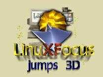

| Noticias Archivos Compañías Consejos |
LinuxFocus: Enero 1998
|  |
Aprende a Programar Gráficos en 3DEste fascímil de LinuxFocus os trae una serie de artílos que explora la posibilidades de programación de gráficos en 3D bajo Linux. Desde la instalación de bibliotecas al soporte de hardware y vaios interfaces API! |
Contenidos
 Correo de Nuestros
Lectores
Correo de Nuestros
Lectores- ¿Qué es
OpenGL? por Miguel
Angel Sepúlveda
Éste es el primero de una serie de artículos sobre OpenGL, quizás el API de más éxito en el campo de gráficos en 3D. - Programando GLUT:Ventanas y Animaciones by
Miguel
Angel Sepúlveda
GLUT es la biblioteca de herramientas de GL, desarrollada por Mark Kilgard. En este artículo el autor introduce GLUT, y nos presenta los primeros pasos en la gestión de ventanas y animaciones con GLUT. - Programando con OpenGL:Trazado de Polígonos Simples por
Miguel
Angel Sepúlveda
El autor describe los primeros pasos en la creación de aplicaciones OpenGL y nos muestra como dibujar sencillos polígonos en 2D. - Análisis de Hardware:Tarjeta Gráfica 3Dfx por Phil
Ross
El chipset 3Dfx Interactive está cambiando el mundo de la gama alta de gráficos 3D... y es soportado por Linux! - Secretos del Kernel por Emiliano Ariel
Lesende
Breve descripción del kernel de Linux. - Depurando con ddd por Jose Maria
Laveda
El ddd es un potentísimo depurador gráfico, con una interfaz muy cuidada. En este artículo, el autor describe algunas de las posibilidades que ofrece el ddd. - Administración y
Mantenimiento de Redes por David
Guerrero
Aprende a mantener y monitorizar recursos de red tales como routers, hubs, servidores y cualquier dispositivo crítico de la red. - Consigue Instalar Linux en una
Máquina Alpha por Bruce
Ediger
El autor comparte con nosotros la experiencia adquirida al trabajar con un Alpha PC. - Curiosidades que hemos
oído:Directo de la boca de la mula
- Consejo: Haciendo funcionar el profile en una Alpha.
- Consejo:Instalando una unidad ZIP en
una máquina Alpha.
- Noticias:ECC2-79 cracked: El Alpha
Linux lo hizo.
Un adelanto de lo que está en preparación para el siguiente número de tu revista:
- Miguel A Sepulveda continuará las series GLUT y OpenGL, nos contará más sobre la gestión de ventanas con GLUT y más cosas sobre el trazado de polígonos.
- Phil Ross escribirá sobre los detalles de programación de las tarjetas 3Dfx.
- Juan M Sepulveda y Phil Ross nos presentarán una comparativa entre el Photoshop y el Gimp.
- Varios autores describirán el entorno X y algunas utilidades ofimáticas para Linux.
¡Apoya a LF!
Incluye este icono en tu página web para dar tu apoyo a LinuxFocus y a la idea de una revista multilingüe libre para la comunidad Linux.
|
Plantilla de LinuxFocus Coordinador de proyecto/Editor Ingles Miguel Angel Sepulveda Editor Español Ismael Ripoll Editor Sueco: Stefan Ottosson Editor Frances: John Perr Editor Turco: Emre Demiralp Editor Italiano: Antonio Esposito y Nicola Monticchiari Gráficos & Expertos Web: Sepulveda's (Juan, Esperanza, Miguel Angel), Victor Jalencas. Redactores: Phil Ross, David Guerrero, Jose Quesada, Jose M Laveda, Manuel Trujillo, Luis Colorado, Manuel Soriano, Ismael Ripoll, Emiliano A Lesendre, Omar A Armas. Traductores/Revisores: Hugo Lastras, Jorge G Villalonga, David Lynes, Emre Demiralp, Daniel Robbins, así como todos los antes mencionados. |
[ Prev | Next | Random | Index | Home ] |
Páginas web mantenidas por Miguel A Sepulveda.